@东城居民 东城区年内改造提升200座公厕
来源：北京东城
提到公厕只能想到“脏乱差”？
不不不
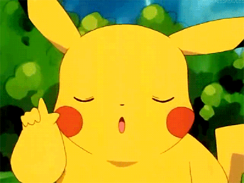东城区2018年“厕所革命”提升改造工程中的
9座样板间竣工并投入使用！！
同时，东城环卫中心计划年内至少完成
200座公厕的改造提升任务。
快来看看改造后的样子吧！
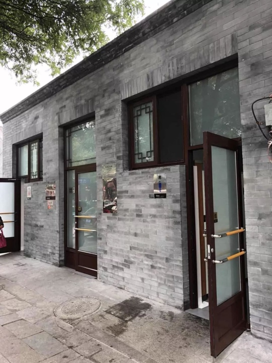新增污物倾倒口、无障碍扶手
雍和宫大街40号旁的公厕干净明亮，没有异味。附近的居民回忆说，这里原来是脏乱差的代表。
居民
以前太差了，小、矮、黑。你跟这儿站着，能给你熏晕了。
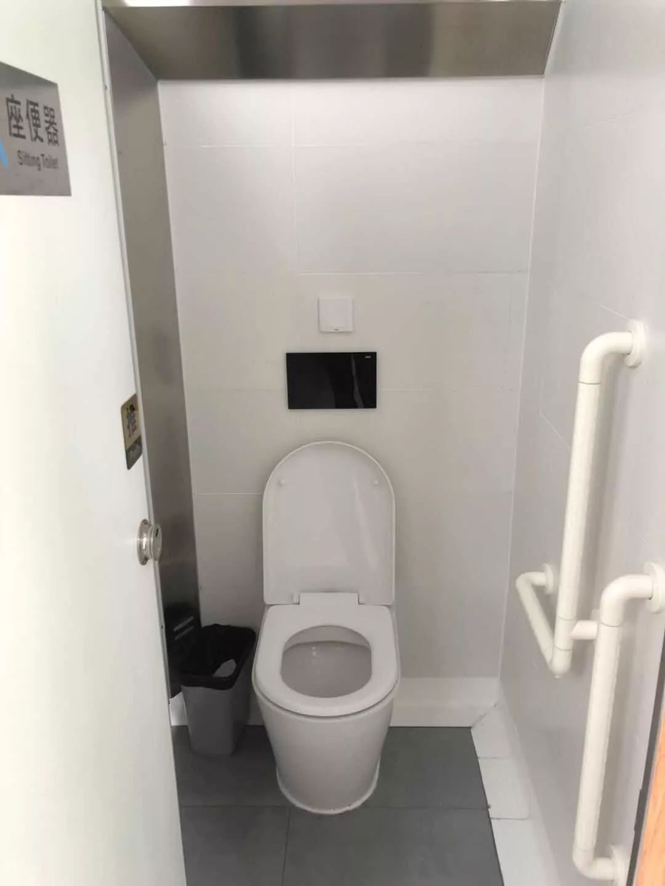 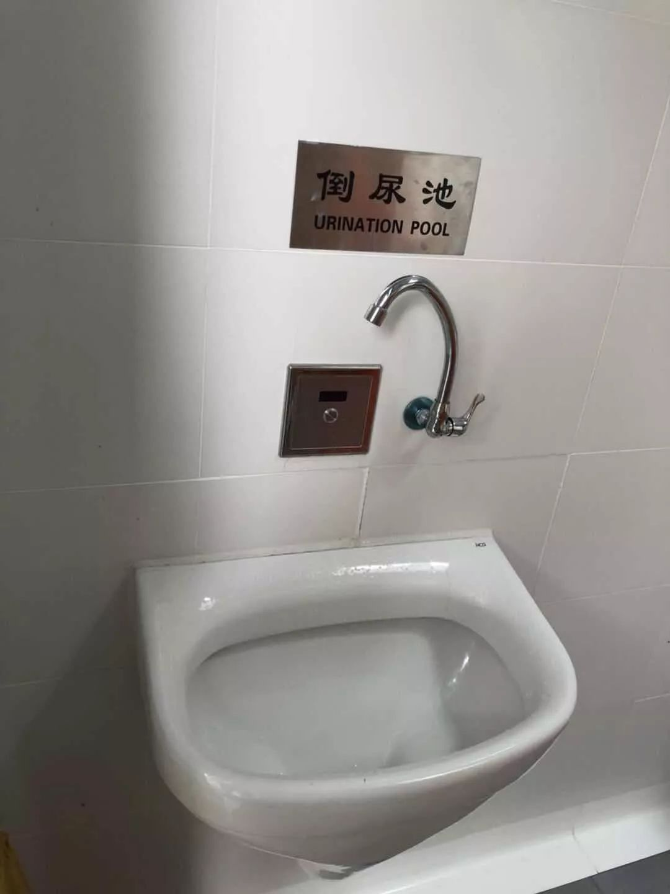公厕改造前，东城区环卫中心征求百姓意见增加了污物倾倒口、每个坑位都增加了无障碍扶手。家住北新胡同西口的张先生很满意这次“厕所革命”。
这是倒尿池，直接倒里头，墙壁上有一个感应器。还有个自来水管，可以冲冲痰桶。
因地制宜，分三类设计方案
结合地区特点和百姓意见，东城区将公厕分为一、二、三类，按照“一厕一设计”的方案对厕所进行改造。东城区环卫中心副主任董宁说
一类公厕还有一个第三空间母婴关爱室。二类公厕有管理室，但是没有残疾人使用的这个第三空间。三类公厕管理间也没有。在东城区大部分是三类公厕，占比已经达到900多座。今年改造的工作的重点也就在平房区的这些三类公厕，所谓“一厕一设计”，比如说每一座公厕它所处的位置，它的服务人群都不一样。街坊厕所肯定有“倒污口”的这么一个需求，但是像旅游景区周边，它就不一定有。
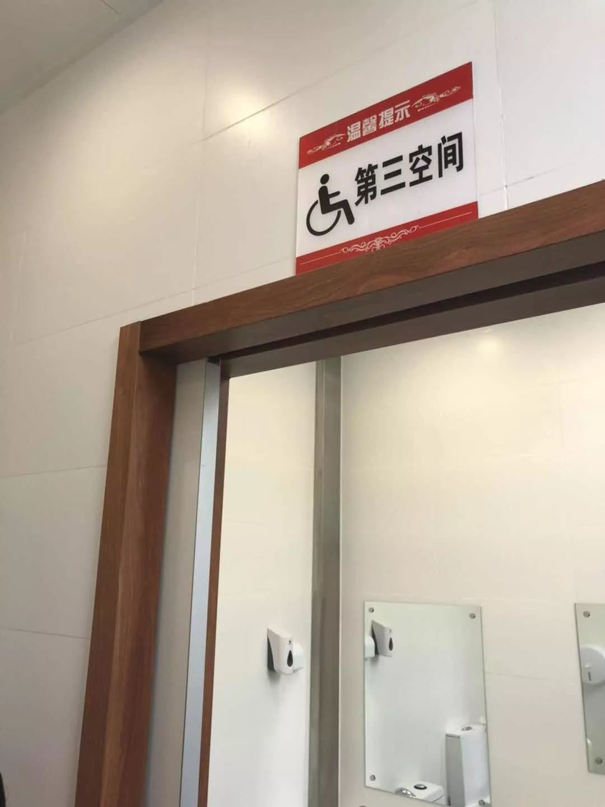
（▲一类公厕）
 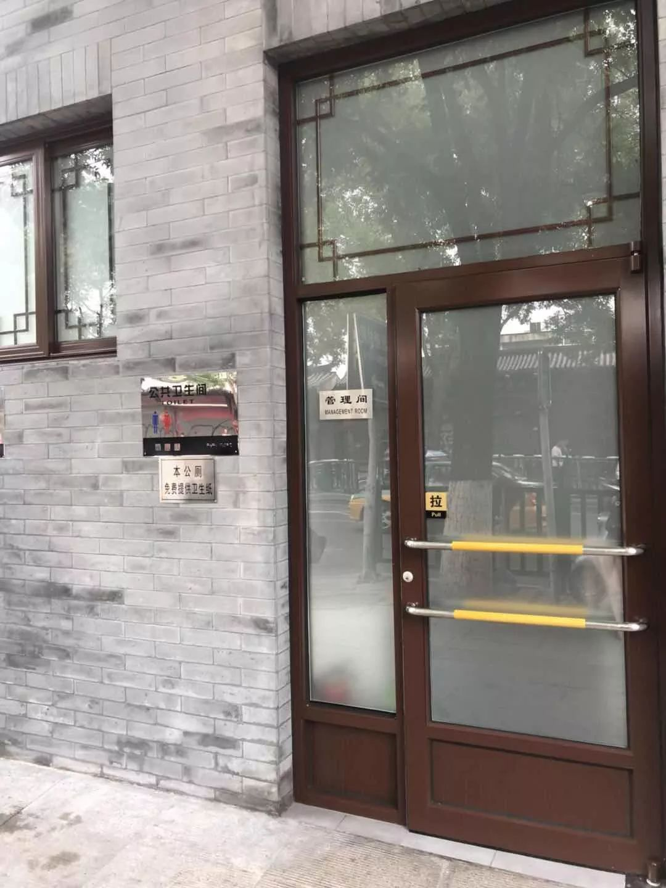
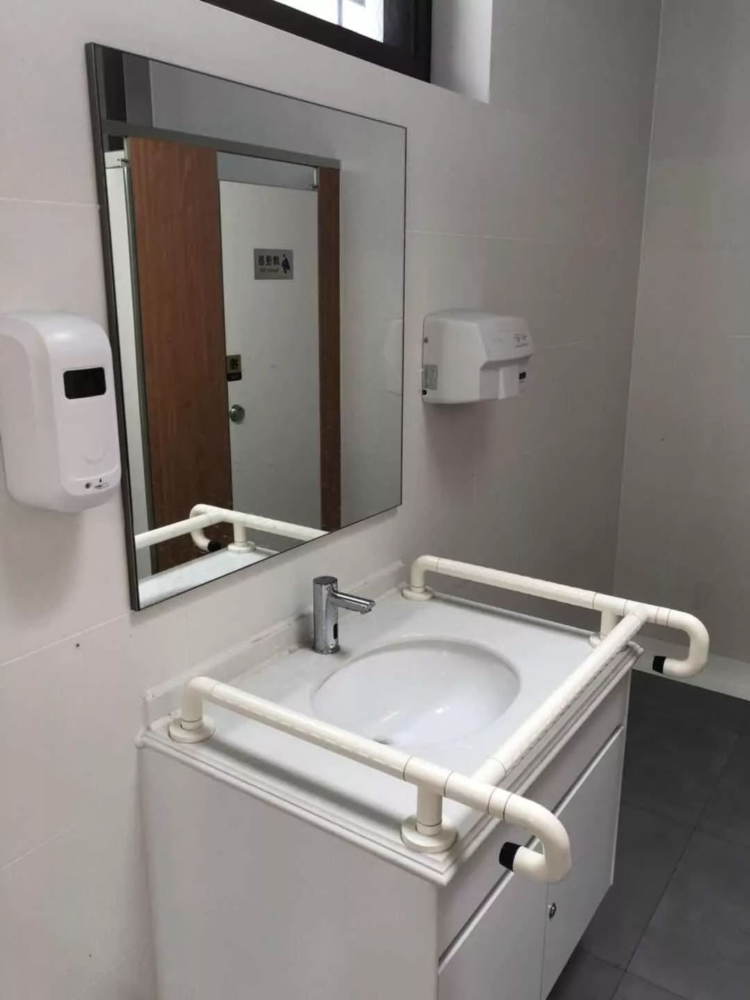
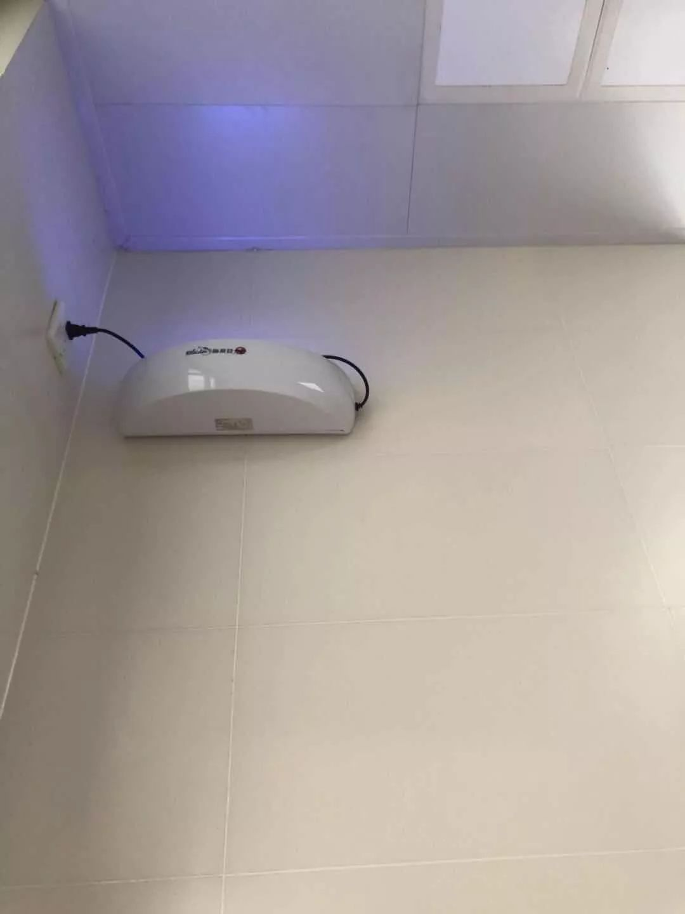
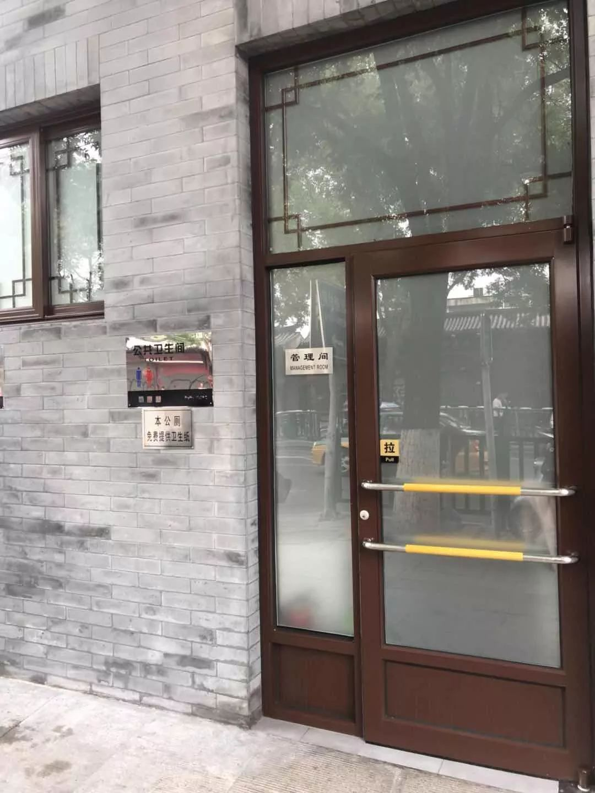
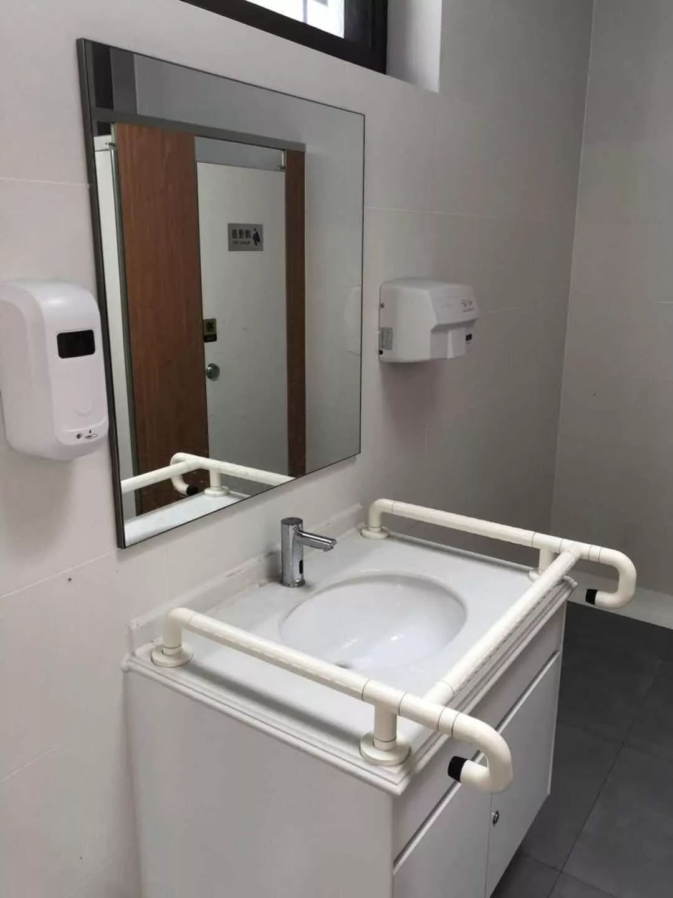
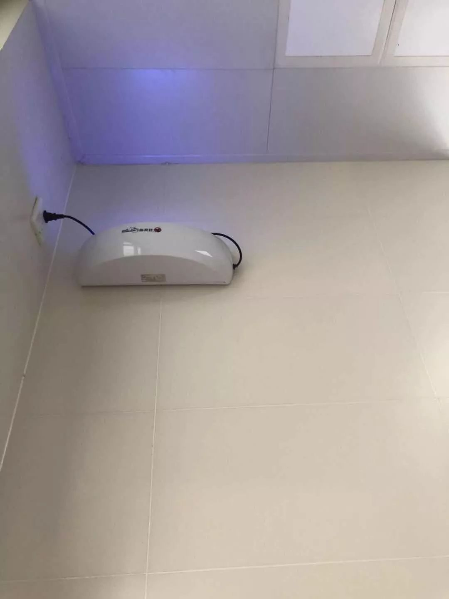
（▲二类公厕）
解决冬季供暖问题，保持通风采光
为了达到“冬天不冷、夏天不热、全年无味”的厕所改造目标，这次“厕所革命”在设计上花了不少心思。
今年我们采用了石墨烯供暖，把暖气放在了屋顶，通过这样的方式解决冬季供暖的问题，夏天的话我们都给它增加天窗，增加了自然通风和自然采光，坐便器的侧后方也有一个强排的抽风，把臭味尽快的排出。
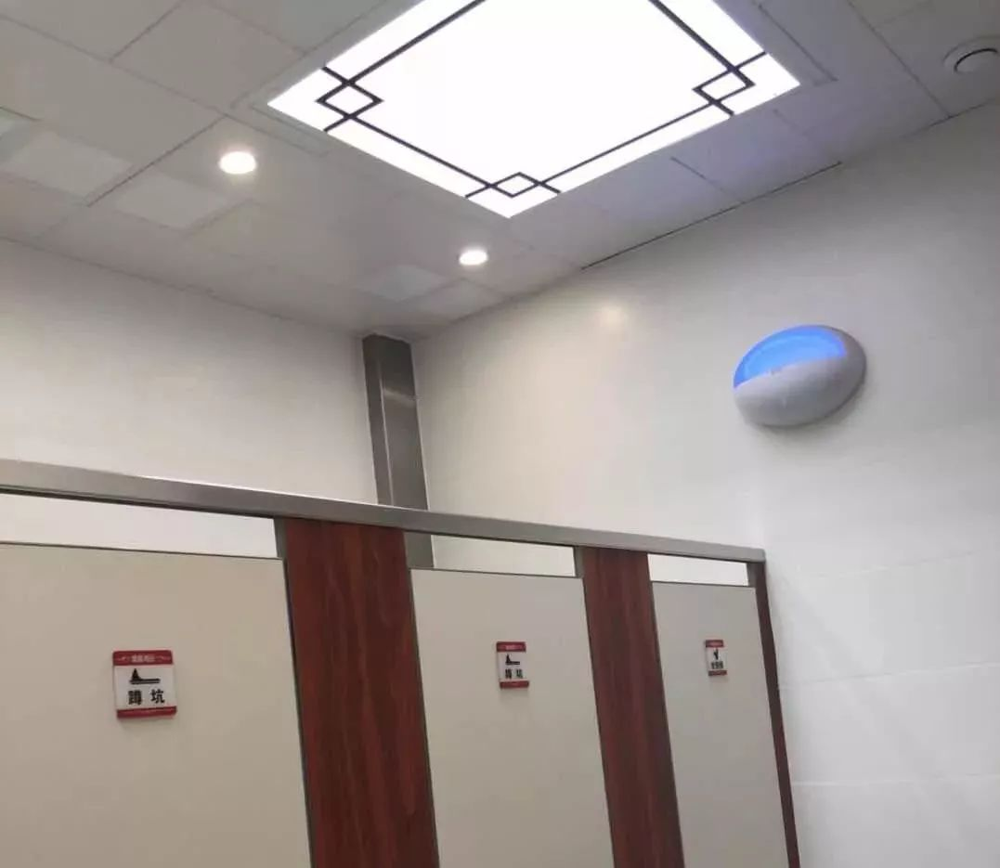提供免费厕纸
厕纸免费提供也是这次“厕所革命”的一大亮点。到今年11月底，东城将采用“互联网+以商补厕”的形式，为公厕安装感应厕纸机。
等您坐踏实了，再伸手，它会提供一段80厘米长的厕纸，不够的情况之下再扫码进行取纸。如何体现出”以商补厕“呢？我们伸手的同时，可能会有一段公益广告推送，用这种公益广告的费用来弥补厕纸的成本。
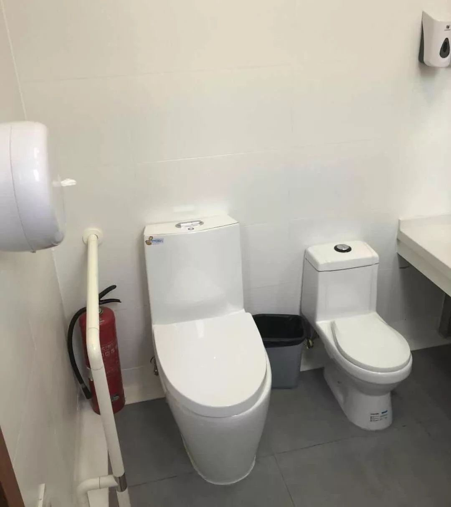此次率先亮相的9座样板间分别位于雍和宫大街、青龙胡同、皇城根北街等地区，从今年开始，东城计划利用三年时间完成全区厕所革命的目标。
东城区一共是有1325座公厕，2018年，我们计划对其中的335座公厕进行提升改造，2019年计划改造公厕227座，2020年我们计划改造公厕478座。
期待“厕所革命”的全部完工
环境棒棒的
心情美美的~